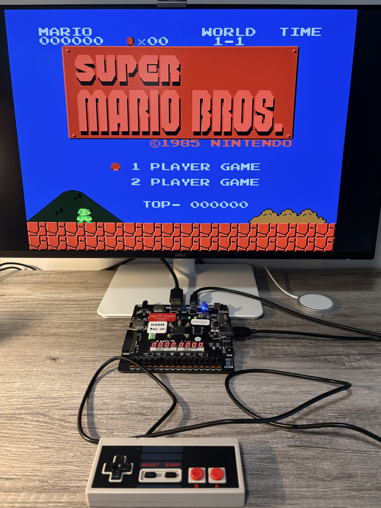
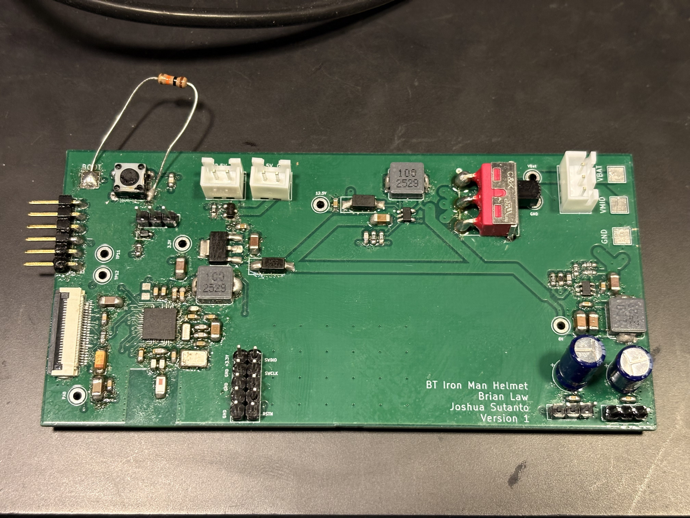
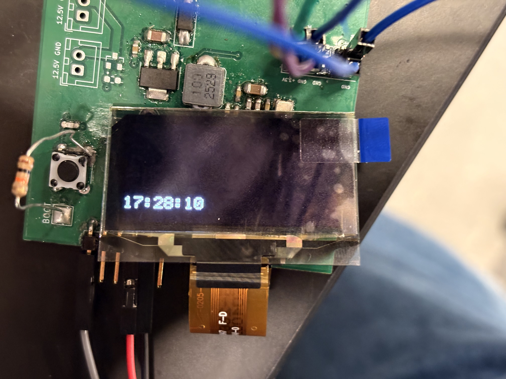

Hey, I'm
Electrical Engineering student @ UIUC
I'm a junior studying Electrical Engineering at the University of Illinois Urbana-Champaign. I enjoy building at the intersection of hardware and software — from implementing System-on-Chip designs on FPGAs to designing custom PCBs with embedded firmware. I'm passionate about digital design, embedded systems, and turning ambitious ideas into working hardware.
Work

Implemented a fully functional Mapper 0 NES emulator as a System-on-Chip on the Spartan 7 FPGA (Urbana Board). The design accurately replicates the original NES hardware — including the Ricoh 2A03 CPU and Ricoh 2C02 PPU — and was demonstrated playing Super Mario Bros and Donkey Kong via HDMI output with a real NES controller over USB.


Designed and built a wearable Iron Man helmet featuring a Bluetooth-enabled heads-up display, a motorized visor, and eye LEDs — all driven by a custom 4-layer PCB. The HUD displays live time and iPhone notifications over BLE, projected through a beam-splitter and magnifying lens assembly into a 3D-printed Iron Man faceplate.
Background
Embedded Systems FPGA Intern
CACI International
I validated an RF tuner front-end module for production design candidacy by running a two-phase test protocol — first manually controlling the tuner through the manufacturer's GUI, then writing firmware to interface an ARM core on a ZCU208 evaluation board with the tuner over SPI. Alongside the testing, I developed formal documentation covering system block diagrams, a test configuration BOM, signal chain setup procedures, and step-by-step test plans. From the results I characterized SNR (Signal-to-Noise Ratio), SFDR (Spurious-Free-Dynamic-Range), and frequency resolution, confirming that all specifications match what is required for our final design.
Course Assistant — ECE 110
University of Illinois Urbana-Champaign
As a CA for UIUC's introductory circuits course, I host office hours, assist TAs during labs with 30+ students, and grade homework. The course covers foundational topics including Thévenin/Norton equivalent circuits, BJT and MOSFET behavior, and general circuit analysis — and working through these concepts with students has deepened my own understanding of the material.
Say Hello
I'm always open to new opportunities, interesting projects, or just chatting about hardware and embedded systems. Feel free to reach out.